From a plot and a list of flat owners to a feasibility report: building rights by route, massing alternatives, owners' majorities, Standard 21 economics and a 3D model of the building in its street - one engine, eleven steps.
Before anyone draws a line, an urban-renewal project has to answer one question: does this building work? Today the answer is assembled by hand across a planner, an appraiser, a lawyer and a spreadsheet - each planning route with its own multipliers, each owners' vote with its own statutory majority - and it takes weeks to learn that a building was never viable.
Strata turns that into a guided flow. Enter the plot and what stands on it; the engine works out the rights for the route, generates massing alternatives inside the envelope, rejects the ones that break a rule, ranks the rest, and carries the chosen one through areas, owners' replacement flats, schedule and economics - to documents you can hand to the owners.
A project opens on its verdict. The five numbers that decide it - units, rights used, developer profit, revenue, signatures - sit in a strip at the top of every screen, and the dashboard adds the next step with a single “continue”. The rail on the right is the whole method, eleven steps with a tick as each one is done.
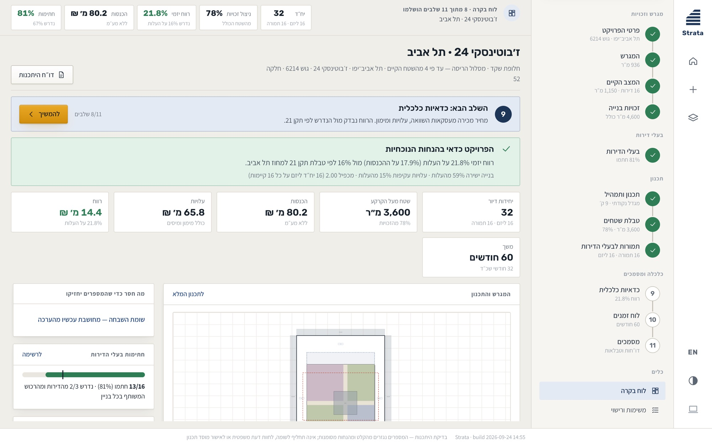
The engine proposes alternatives inside the plan envelope, reports what it rejected and why, and ranks the rest. Each drawing is generated from the same numbers, so changing the mix redraws the elevations - there is no separate model to keep in sync.
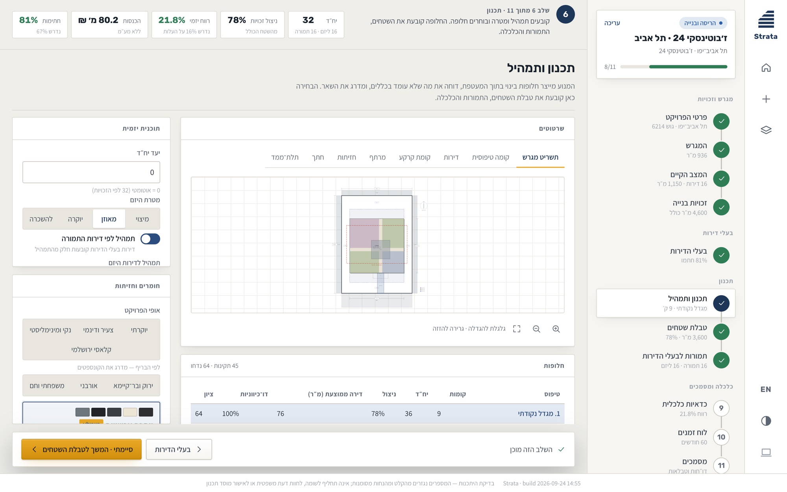
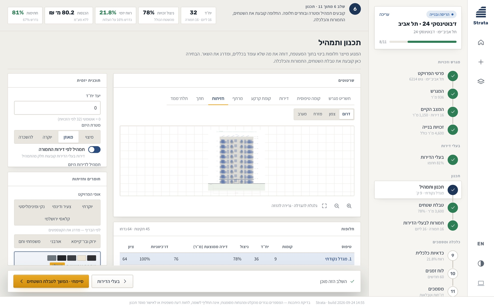
A developer sells a building before it exists, so the 3D studio puts it among its neighbours with real cladding and light from dawn to night. It answers the question owners actually ask: “what will it look like from my balcony?”
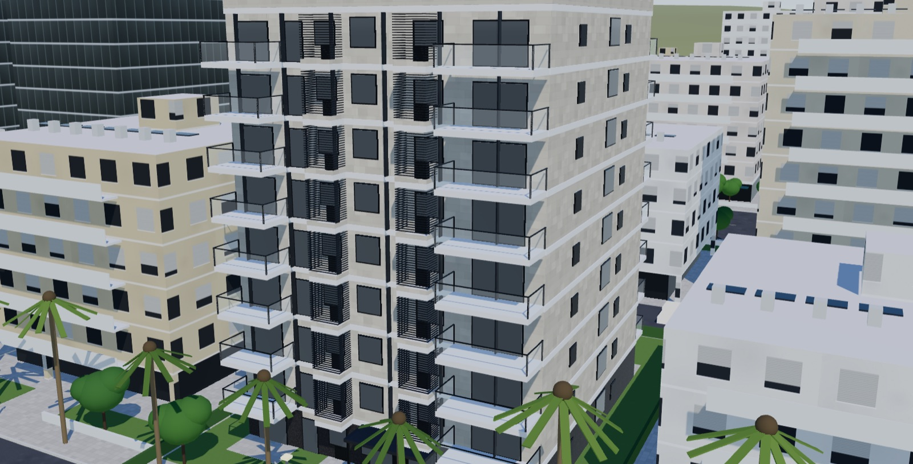
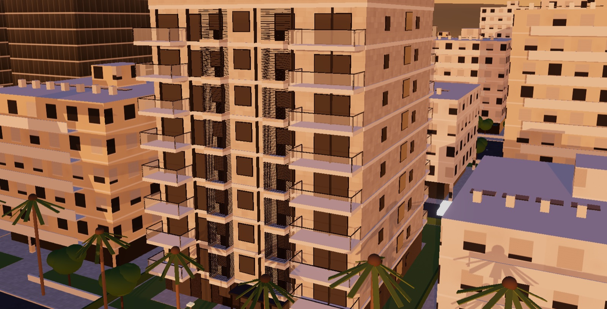
Rights are computed per route, with the rules behind the figure listed beside it. On the owners' side, signatures are drawn as a bar with the legal threshold marked on it, because “are we there yet?” is the only question anyone asks of that number.
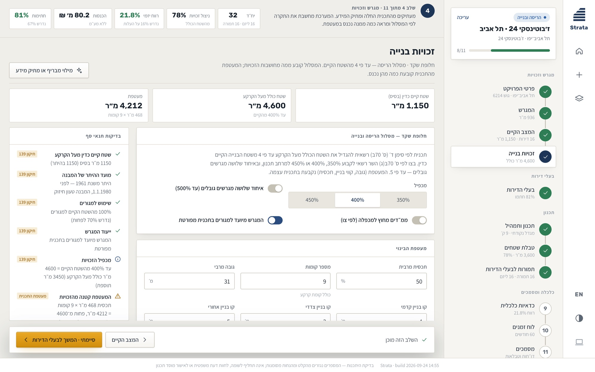
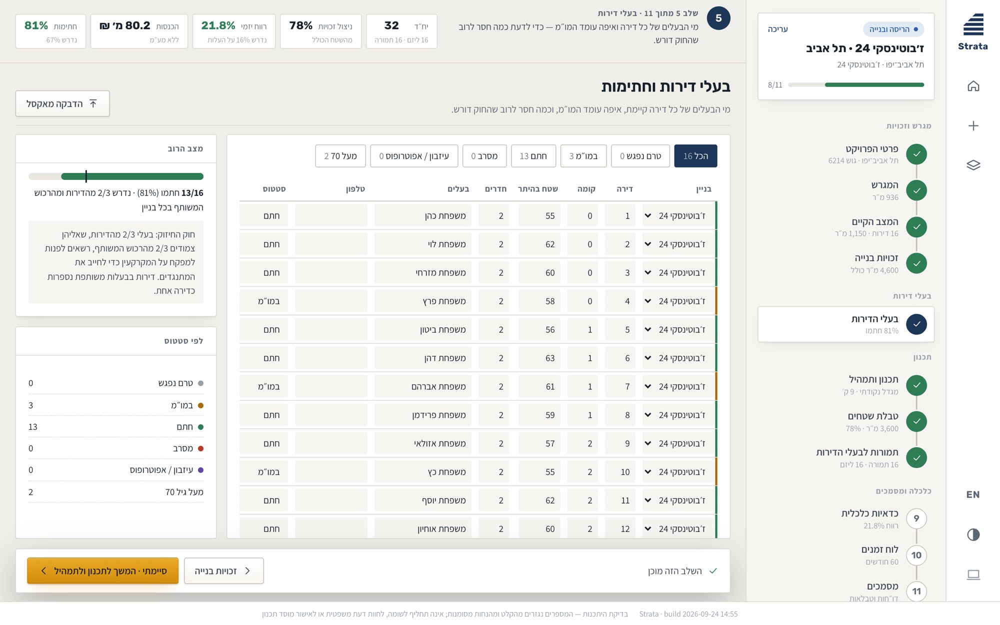
A Standard 21 zero-report: revenue, every cost line and the developer's profit checked against the required margin for the district. Every figure that rests on an assumption carries a small “assumption” tag, so nobody mistakes an estimate for a quote.
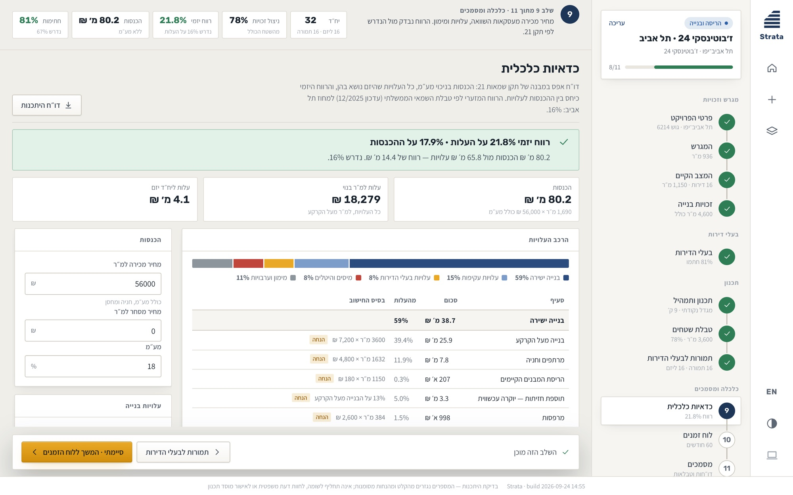
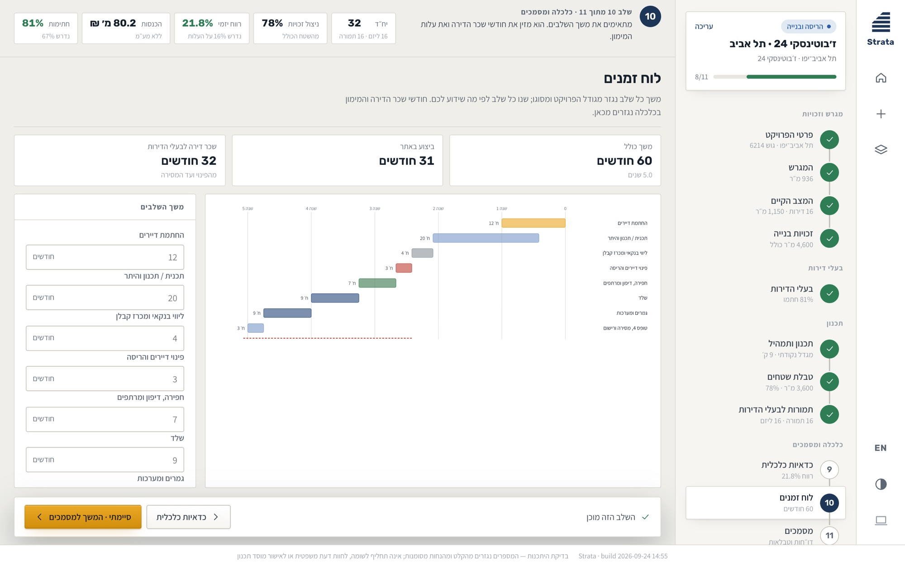
A worked example for every route sits beside your own projects, so the first thing a new user sees is a finished one. At the end of the flow the same numbers become a feasibility report and an offer to the owners, in Hebrew or English.
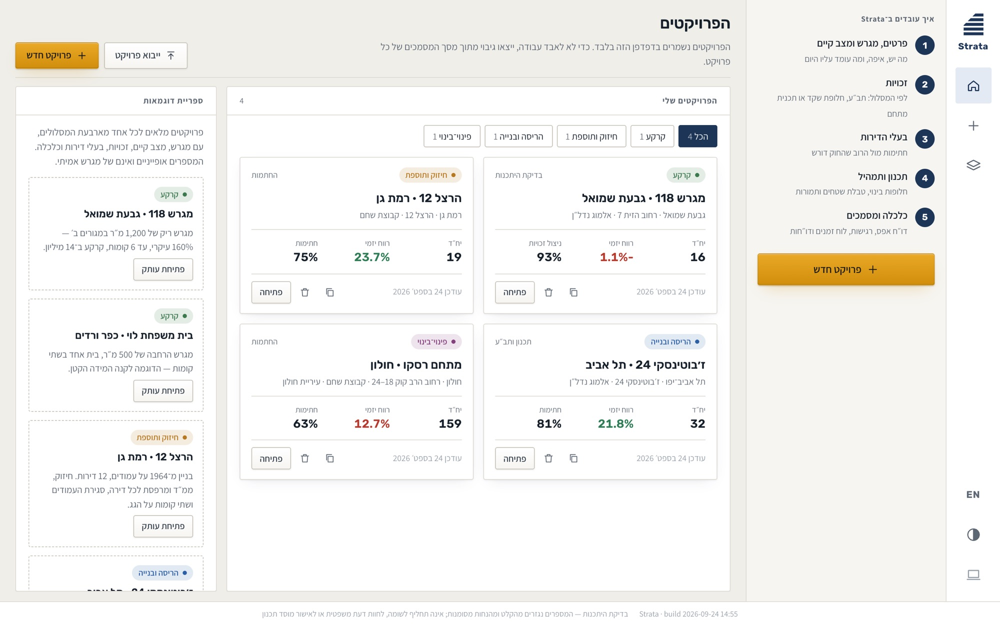
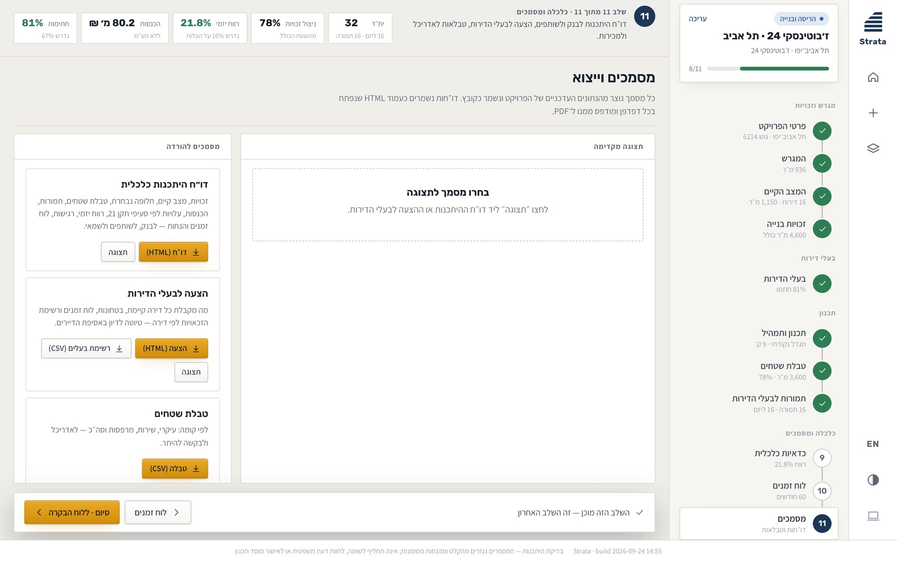